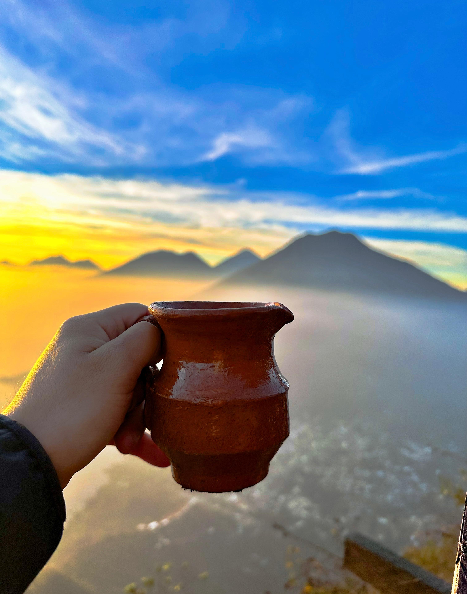
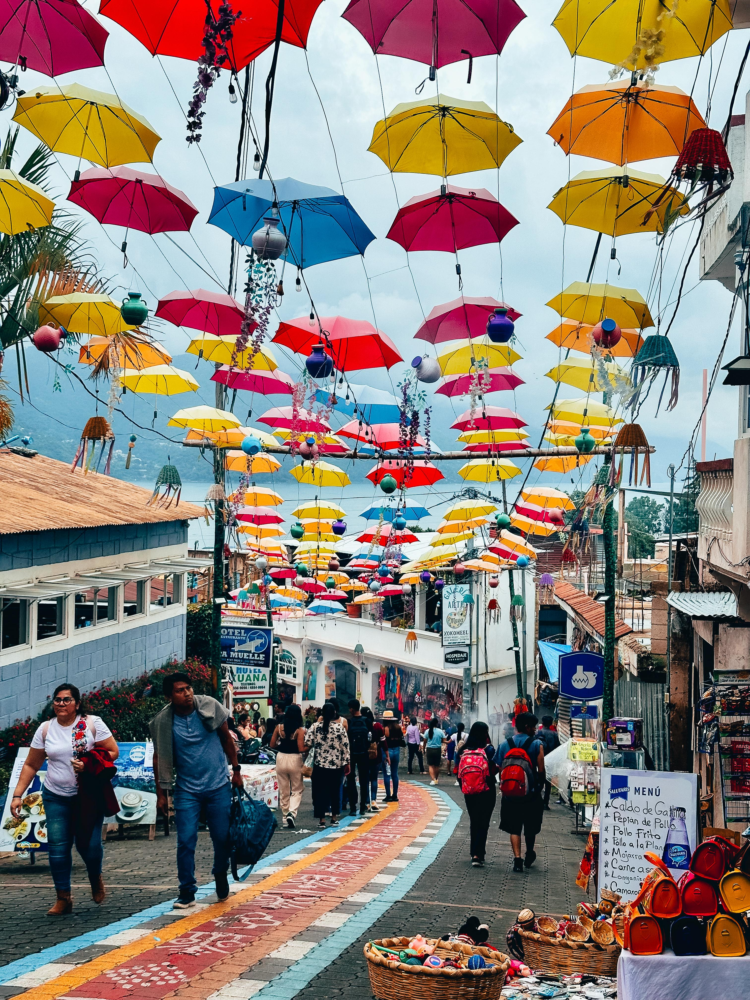
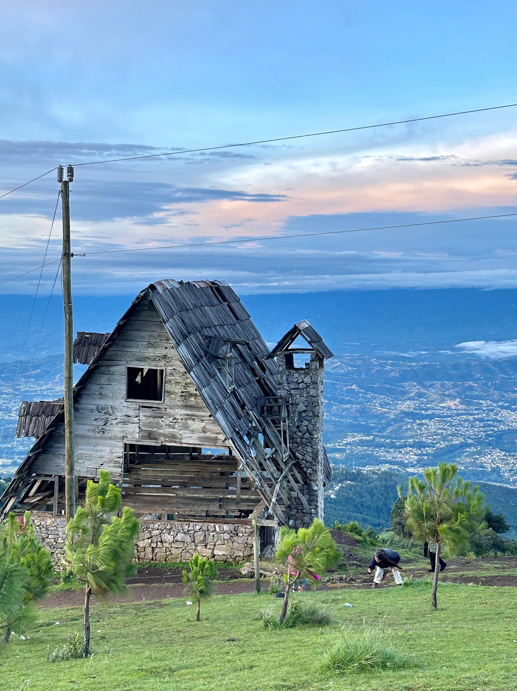

Lago Atitlan
Rodeado de volcanes y pintorescos pueblos mayas, el Lago Atitlán es considerado uno de los lagos más bellos del mundo.

Antigua Guatemala
Ciudad colonial declarada Patrimonio de la Humanidad por la UNESCO

Volcan De Fuego
Uno de los volcanes más activos de Centroamérica.

Solola
Departamento que alberga parte del Lago Atitlán y ofrece una mezcla de tradiciones mayas.
Alta Verapaz
Región montañosa de selvas y ríos. El Parque Nacional Laguna Lachuá es un paraíso natural con aguas cristalinas.

Huehuetenango
Tierra de montañas aquí se encuentra el Mirador Juan Diéguez Olaverri y la mítica Sierra de los Cuchumatanes
Visita Antigua Guatemala
Visita pueblos coloridos que rodean el lago mas bello del mundo
Explora Antigua